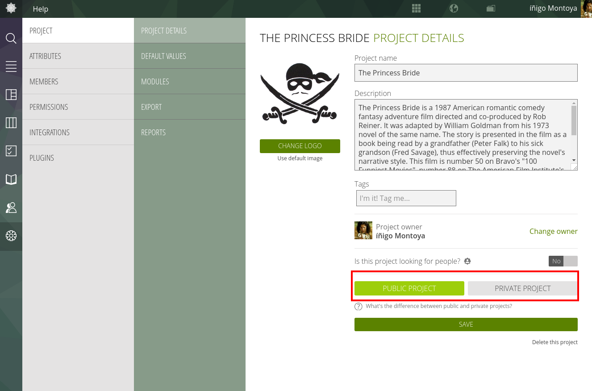

- Who Is Taiga For?
- Why Should I Use Taiga.io And Not (Insert Name Of One Of The Many Worthy Alternatives)?
- How do I get in In touch with you, or keep up with the Latest News?
- How can I contribute to Taiga?
- Making Donations to Taiga
- How do I install Taiga On My Own Servers At Home Or At Work?
- Why is there no Time Tracking?
- What's the difference between public and private projects?
- Important Information about our Code of Conduct
- Important Information about the Taiga License
- Can I use Taiga in my language?
What's the difference between public and private projects?
By default, projects on Taiga are designated as “private“. Private projects are accessible only by the individuals who are granted access by the project administrators. As an administrator, you can change the status of the project from “private” to “public” by going to the Admin > Project > Project Details page and toggling the switch at the bottom of the page. When a project is marked as *“public”** anyone can access every section of your project and view its content. Users WILL be able to see data, but WILL NOT be able to make any changes unless they were invited to become members of the project by the project administrator.

IMPORTANT: Once you change a project status from “public” to “private” only members of that project will be granted access. However, despite the change from "public" to "private" you may find that the project has already been indexed by online search engines such as Google and appear in search queries. The listing in search engines will disappear when the search engine re-indexes the Taiga site. In our experience this happens every 24 to 48 hours.
By making your project “public”, you enjoy the following advantages:
- Projects that are public are completely free and are not counted when we calculate the price tier applicable to a project owner who also has private projects.
- Projects that are public are listed in the “discover” directory of Taiga.io, providing you with great exposure. You can also share the project URL with your own networks to build awareness of your project.
- Projects that are public can be used to showcase your work and expose your project plan, project backlog and current development status.
- Projects that are public allow anyone, not just project members to follow development on your project by becoming “observers” of specific user stories or tasks. Non members can provide feedback and interest level by favoriting or upvoting specific user stories. Non members will gain a deeper understanding of the scope of your project and dive into the details of what you are doing (on a read only basis).
- Projects that are public can be set up as an issue trackers, allowing non members to provide feedback. As an example see: https://tree.taiga.io/project/openswitch/issues
- Projects that are public allow you to meet and follow the members involved in those projects.
Of course there are many projects that are sensitive in nature and require privacy. Taiga.io offers privacy in two ways. You can freely access the Taiga source code under an Open Source license and operate your own server, or alternatively you can access Taiga.io's cloud-based platform and maintain complete privacy by subscribing to one of our (very affordable) paid plans.
Finally, "private" projects do allow for certain modules to be made public. For example, you may wish for all modules of a given project to be private except for your wiki section. To make that (or any other) module public, you must have project admin privileges. Go to the project admin section by enabling the appropriate permissions of the "external user" setting. If you enable any visibility permission for "external users", you should be aware that your project will appear in our discover section and Google or other search engines will be able to index it too.